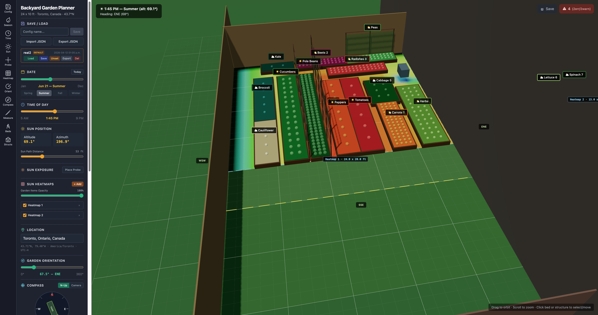
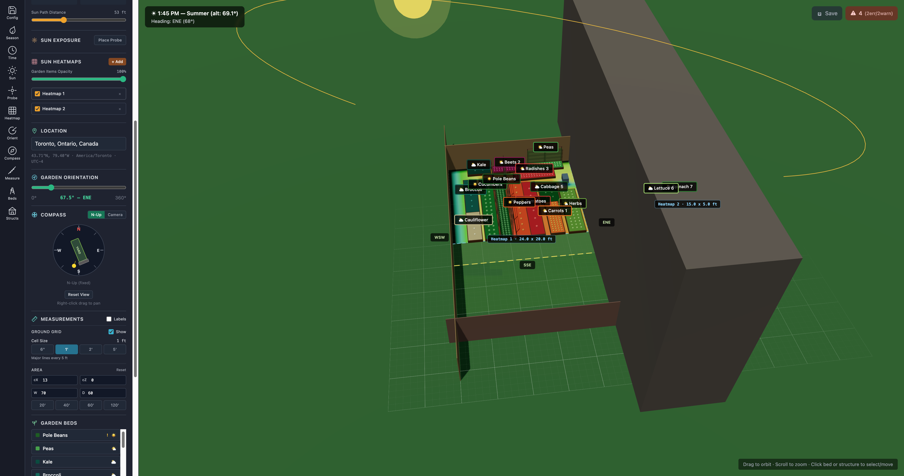
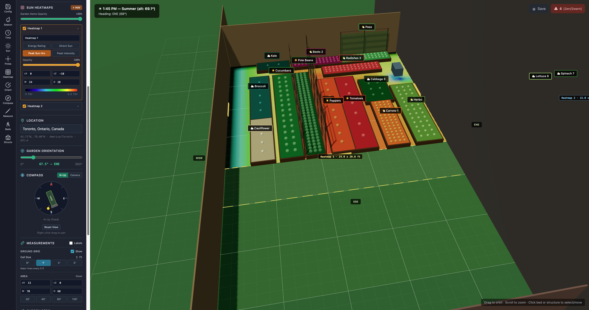
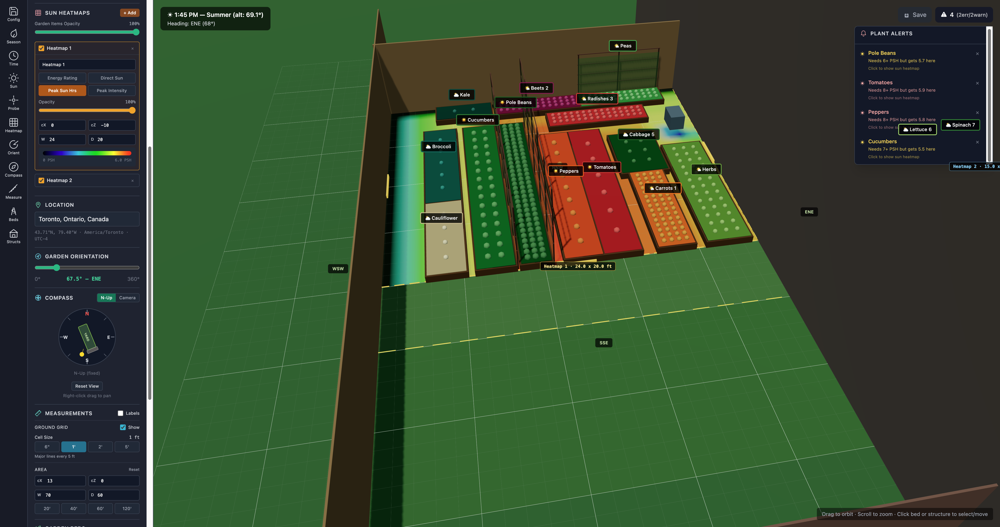

Every spring I stare at my 24 × 10 ft Toronto backyard and guess which beds get enough sun. I wanted a 3D simulator that shows the actual sun path across the season — and tells me when a plant is in the wrong place.

Real solar geometry for 43.7°N. Drag beds and structures, scrub time and season, and watch shadows fall exactly where they will in your yard.
No backend. No auth. Everything lives in the browser. Sun position is computed from solar geometry — no APIs, no weather services, no location lookups required.
Two concentrated bursts: a 12-minute foundational build just after midnight, then feature refinement through the afternoon.

Declination, altitude, and azimuth calculated from day-of-year + hour. Ray-AABB shadow casting against every structure. No external APIs.

Multiple heatmap instances with independent center, size, and mode. Shows peak sun hours, direct exposure, or total daylight across the yard.

Per-plant peak-sun-hour thresholds. Click an alert to jump to the bed and auto-flash the sun heatmap. Dismiss until the bed is moved.
During a "fresh-load" test, Claude ran localStorage.clear() and nuked three saved garden layouts I'd been iterating on for an hour.
The fix: a persistent memory rule — never clear localStorage without explicit permission. Written once, respected every session after.
It's that planning is the work now. The best hours of this build were the ones where I sat with a plan before any code got written. Claude executed; I architected.
React · Three.js · TypeScript · Claude Code · Opus 4.6 (1M context)